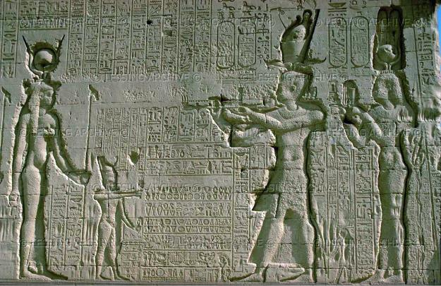

ارتقاء العرش، مقتل بومبي، والتحالف مع يوليوس قيصر وحرب الإسكندرية
📜 الترجمة الأكاديمية والتحليل التاريخي
الصفحات 73–74• وصية أوليتيس واعتلاء العرش (51 ق.م): عقب وفاة بطليموس الثاني عشر أوليتيس عام 51 ق.م، ترك وصية رسمية مودعة في روما تنص على أن تتزوج ابنته الكبرى كليوباترا السابعة من ابنه بطليموس الثالث عشر ليحكما مصر معاً كشريكين في العرش. تعد كليوباترا السابعة آخر الملوك المقدونيين الذين حكموا مصر، وقد خلّدها التاريخ كأسطورة لامرأة جمعت بين الذكاء الاستثنائي المتقد (Formidable Intellect) والطموح السياسي الجامح، وسخّرت سحرها وفصاحتها لخدمة مصالح مصر ومجدها.
• طموح الحكم المنفرد وأخطاء البداية: كانت كليوباترا تتطلع للانفراد بالحكم؛ فشاركت والدها لفترة وجيزة عام 51 ق.م، ثم أخيها وزوجها بطليموس الثالث عشر. لكنها في بداية عهدها لم تكن حكيمة بالقدر الكافي؛ فلم تستمع لنصائح مستشاري البلاط وقادة الجيش، وقدمت دعماً منفرداً للقائد الروماني بومبي بالسفن والحبوب والأموال، مما أثار حفيظة البلاط وحرس القصر وانتهى بتمرد شعبي وعسكري أجبرها على الفرار إلى سوريا لتجهيز جيش.
• صراع بومبي وقيصر ومقتل بومبي في مصر (48 ق.م): كانت روما تطمع دوماً في ثروات مصر؛ وكان بومبي هو الوصي القانوني على العرش. ولكن بعد هزيمة بومبي الساحقة أمام يوليوس قيصر في معركة فارسالوس (Battle of Pharsalia 48 BC)، فر بومبي لاجئاً إلى شواطئ مصر، فقام رجال حاشية بطليموس الثالث عشر (بوثينوس وأخيلاس) بقتله على الفور ظناً منهم أن ذلك سيرضي قيصر المنتصر!
• وصول قيصر ولقاء السجادة الأسطوري: حينما وصل يوليوس قيصر إلى الإسكندرية (48–47 ق.م) حاملاً غضبته لقتل بومبي الغادر، نجحت كليوباترا بدهائها في التسلل سراً إلى مخدعه بالقصر الملكي (ملفوفة داخل غطاء فراش/سجادة حملها خادمها أبولودوروس)، وأقنعته بحقها في العرش. اندلعت «حرب الإسكندرية» حينما حاصر بطليموس الثالث عشر قيصر بالقصر؛ واضطر قيصر لحرق الأسطول المصري في الميناء مما أدى لامتداد النيران لمستودعات لفائف مكتبة الإسكندرية. وانتهت المعركة بانتصار قيصر وغرق بطليموس الثالث عشر بدرعه الذهبي في النيل!
• تتويج كليوباترا وولادة قيصرون: أعاد قيصر كليوباترا إلى العرش وزوّجها صورياً من أخيها الأصغر بطليموس الرابع عشر. وأنجبت كليوباترا من قيصر ابنهما الوحيد «بطليموس الخامس عشر قيصرون» (Ptolemy XV Caesarion)، الذي شاركها عرش مصر رسمياً بداية من عام 36 ق.م.
🏛️ ACADEMIC ENGLISH TEXT
Pages 73–74"Queen Cleopatra VII (51–30 BC)"
"After the death of Ptolemy XII, he left a will in Rome saying that his eldest daughter Cleopatra VII should marry his son Ptolemy XIII and rule Egypt together. Cleopatra VII is the last of the Macedonian rulers of Egypt; Cleopatra VII has been preserved in legend as a woman of formidable intellect and ambition who used her beauty and charm to advance Egypt’s fortunes."
"Queen Cleopatra was looking forward to have the upper hand in ruling the country. In 51 BC, she became joint ruler with her father Ptolemy XII Auletes (who died in 51 BC) and then with her brother and husband, Ptolemy XIII. When he died in 47 BC, her younger brother (also her husband) Ptolemy XIV succeeded him."
"At the beginning of her rule, Cleopatra VII wasn’t wise enough, she didn’t listen to her advisers or to the army and she supported Pompey by sending him ships, grain, cash contribution; when the revolt against her started even the palace guards did not stand by her side."
"Rome, attracted by Egypt’s wealth, had influenced Ptolemaic policy for some time; Pompey involved himself in the affairs of Auletes and was appointed by the Senate as legal guardian. Pompey’s ambitions brought him into conflict with Julius Caesar and, after defeat at the Battle of Pharsalia (48 BC), Pompey fled to Egypt where he was killed by Egyptian courtiers."
"When Caesar came to Alexandria (48–47 BC), Cleopatra persuaded him to support her cause, hoping to strengthen her position and to regain her throne. Their son, Ptolemy XV Caesarion, ruled jointly with Cleopatra from 36 BC."
📜
استزادة للمرشد: التاريخ كقصة ممتعة للمرشد السياحي: لقاء السجادة الذي غيّر خارطة العالم!
حكاية تاريخية
▼
كانت كليوباترا محاصرة في رمال الصحراء على حدود مصر، وأخوها وجيشه يسيطرون على الإسكندرية، وقيصر الروماني العظيم يقيم في القصر الملكي حائراً بعد مقتل غريمه بومبي. ركبت كليوباترا قارباً صغيراً في عتمة الليل، وتسللت عبر أمواج البحر، ثم لُفت داخل غطاء فراش ثقيل وحملها صديقها المخلص على ظهره كهدية مرسلة لقيصر! وحينما فُك الرباط في مخدع الدكتاتور الروماني، انبثقت أمامه شابة في الحادية والعشرين من عمرها، تتحدث اللاتينية واليونانية بطلاقة ملكية وذكاء ساحر، لتأسر عقل أعظم قادة روما في لحظات وتستعيد تاج الفراعنة بحركة شطرنج واحدة لا تتكرر في التاريخ!
التحالف مع مارك أنطوني واحتفال «تبرعات الإسكندرية» التاريخي (34 ق.م)
📜 الترجمة الأكاديمية والتحليل التاريخي
الصفحات 74–75• اغتيال قيصر واللقاء بمارك أنطوني في طرسوس (41 ق.م): بعد اغتيال يوليوس قيصر في روما عام 44 ق.م، صعد القائد العسكري مارك أنطوني كحاكم للشرق الروماني. استدعى كليوباترا إلى مدينة طرسوس (Tarsus) بآسيا الصغرى لمساءلتها عن موقف مصر؛ فجاءته على متن سفينة ذهبية شراعية بمجاديف فضية مرتدية زي الإلهة أفروديت، فوقع أنطوني في غرامها السياسي والشخصي على الفور!
• الأهداف السياسية المشتركة والذرية الملكية: كانت كليوباترا تأمل في توظيف القوة العسكرية الرومانية لاستعادة أمجاد الإمبراطورية البطلمية القديمة؛ بينما كان أنطوني بحاجة ماسة إلى ذهب مصر وخزينتها وحبوبها لتمويل حملاته العسكرية ضد البارثيين (Parthians). وأثمر هذا الزواج عن ثلاثة أبناء: التوأمان «الإسكندر هيليوس» (الشمس) و«كليوباترا سيليني» (القمر)، ثم «بطليموس فيلادلفوس».
• مراسم تبرعات الإسكندرية الكبرى (34 ق.م): في عام 34 ق.م، أقام أنطوني وكليوباترا حفلاً مهيباً وغير مسبوق في جمنازيوم الإسكندرية؛ حيث جلس كلاهما على عروش ذهبية أمام الجماهير وأعلنا تقسيم أقاليم الشرق الروماني والفتوحات المنتظرة ومنحها لكليوباترا وأبنائها:
- الملكة كليوباترا السابعة: أُعلنت "ملكة الملوك" ومُنحت حكم مصر، قبرص، ليبيا، وجوف سوريا (Coele-Syria).
- بطليموس الخامس عشر قيصرون: أُعلن "ملك الملوك" والوريث الشرعي الوحيد ليوليوس قيصر وشريك والدته في العرش.
- الإسكندر هيليوس (Alexander Helios): مُنح حكم أرمينيا وميديا وبلاد بارثيا.
- بطليموس الصغير (Ptolemy Philadelphus): مُنح فينيقيا وسوريا وقيليقيا.
- كليوباترا سيليني (Cleopatra Selene): مُنحت إقليم قورينائية (برقة في ليبيا).
• الصدمة الرومانية: شكل هذا التقسيم صدمة عنيفة للرومان ومجلس الشيوخ؛ إذ بدا وكأن القائد الروماني أنطوني يفرط في أراضي وممتلكات الجمهورية الرومانية ويهديها لملكة أجنبية وأولادها!
🏛️ ACADEMIC ENGLISH TEXT
Pages 74–75"Alliance with Mark Antony & The Donations of Alexandria"
"Queen Cleopatra VII hoped that Mark Antony would help her restore Egypt to its past glory by using Rome’s powers. She hoped that her marriage to Mark Antony would provide her with the opportunity to divide the eastern possessions between themselves. There were children from her associations with both Caesar and Antony."
"In 34 BC, Cleopatra and Antony staged the great ceremony known as the Donations of Alexandria, at which some of the eastern provinces and anticipated conquests were assigned to Cleopatra and her children."
"Thus Cleopatra obtained Egypt, Cyprus, Libya and Coele-Syria, while Alexander Helios received Armenia, Media and Parthia. Ptolemy was given Phoenicia, Syria and Cilicia, and Cleopatra Selene gained Cyrene."
"Mark Antony was an astute man, and from 37 BC onwards his close association with Cleopatra brought him both money and supplies."
📜
استزادة للمرشد: التاريخ كقصة ممتعة للمرشد السياحي: يوم ارتدت الإسكندرية عباءة عاصمة العالم!
حكاية تاريخية
▼
في ذلك اليوم المشهود من عام 34 ق.م، احتشد مئات الآلاف من السكندريين في مدرجات الجمنازيوم العظيم ليشهدوا مشهداً لم ترَ البشرية مثله: كليوباترا ترتدي الثوب الفضي كإلهة إيزيس الحية، وأنطوني جالس بجوارها في هيئة الإله ديونيسوس، وأمامهما أربعة أطفال صغار يرتدون تيجان وملابس ملوك فارس ومقدونيا وسوريا! وقف أنطوني يوزع إمبراطوريات الشرق على أطفال كليوباترا كما تُوزع الهدايا؛ لكن هذا الاستعراض المبهر كان في الحقيقة بمثابة توقيع على حكم الإعدام بحقهما، إذ استغل الشاب الداهية أوكتافيوس في روما هذا المشهد ليقنع الشعب الروماني بأن روما تُسرق لحساب مصر!
حرب أوكتافيوس الدعائية، موقعة أكتيوم البحرية (31 ق.م)، ولدغة الصل الأخيرة
📜 الترجمة الأكاديمية والتحليل التاريخي
الصفحات 75–76• الحملة الدعائية الشرسة لأوكتافيوس: كان أوكتافيوس (الذي أصبح الإمبراطور أغسطس لاحقاً) يرى في التحالف المصري خطراً داهماً يهدد السيادة الرومانية، خاصة وأن أنطوني هجر زوجته أوكتافيا (أخت أوكتافيوس). شن أوكتافيوس حملة دعائية عبقرية في روما؛ ونشر وصية أنطوني المسروقة التي طلب فيها أن يُدفن في الإسكندرية بجوار كليوباترا، وأقنع مجلس الشيوخ بأن أنطوني مسلوب الإرادة يقضي أيامه في السكر والمجون (Debauchery & Drunkenness)، معلناً الحرب رسمياً ليس ضد أنطوني الروماني بل ضد «ملكة مصر الأجنبية كليوباترا»!
• موقعة أكتيوم البحرية الفاصلة (سبتمبر 31 ق.م): التقى الأسطولان في مواجهة بحرية كبرى قبالة خليج أكتيوم في غرب اليونان في سبتمبر عام 31 ق.م. وخلال اشتداد وطأة القتال، قامت كليوباترا بسحب سفن أسطولها المصري (60 سفينة حربية) لسبب غامض وانشقت عائدة، فما كان من أنطوني إلا أن لحق بسفينتها تاركاً أسطوله وجيشه للدمار والهزيمة الساحقة أمام سفن أوكتافيوس السريعة بقيادة القائد أجريبا!
• سقوط الإسكندرية وانتحار أنطوني (أغسطس 30 ق.م): عاد أنطوني وكليوباترا إلى الإسكندرية في انتظار الحسم. وبعد عشرة أشهر، حاصرت القوات الرومانية بقيادة أوكتافيوس مدينة الإسكندرية براً وبحراً عام 30 ق.م. وعندما انتشرت شائعة كاذبة بأن كليوباترا انتحرت داخل ضريحها الملكي، ألقى أنطوني بنفسه على سيفه ومات بين يديها في اللحظات الأخيرة.
• انتحار كليوباترا بـلدغة الكوبرا (12 أغسطس 30 ق.م): وقعت كليوباترا أسيرة في يد أوكتافيوس، وعلمت أنه يخطط لاقتيادها مكبّلة بالسلاسل في موكب نصره المهيب بشوارع روما (Roman Triumph). ففضّلت الموت الملكي بكبرياء وشموخ؛ وأنهت حياتها في 12 أغسطس 30 ق.م بلدغة أفعى الكوبرا الملكية (Asp) المهربة إليها في سلة تين. والكوبرا (الصل المصري) في العقيدة الفرعونية ترمز للسيادة الإلهية والخلود الملكي.
• مصرع قيصرون وتحول مصر لولاية رومانية: خشي أوكتافيوس من بقاء ابن قيصر حياً، فأمر بإعدام الفتى قيصرون قائلاً عبارته الشهيرة: "لا يحسن أن يكون هناك اثنان من القياصرة"، بينما أبقى على أطفال أنطوني لتتبناهم أخته أوكتافيا. وفي 31 أغسطس 30 ق.م، أُعلن أوكتافيوس فرعوناً على مصر، وحوّلها رسمياً إلى ولاية إمبراطورية خاصة تابعة للإمبراطور مباشرة، مسدلاً الستار على دولة البطالمة واستقلال مصر لقرون طويلة.
🏛️ ACADEMIC ENGLISH TEXT
Pages 75–76"The Fall of Alexandria & End of Ptolemaic Egypt"
"Augustus (Octavian) regarded Antony (who had married his sister) and his Egyptian power-base as an eastern threat to Roman ascendancy."
"He waged a successful propaganda campaign against Mark Antony and the Egyptian queen and persuaded the Roman Senate that Antony had spent years in debauchery and drunkenness at Alexandria. Antony was denounced as an enemy of Rome and military action soon followed: Augustus defeated him at the Battle of Actium in western Greece in September of 31 BC."
"For some unknown reason, Cleopatra withdrew her squadron when the battle was raging and, followed by Mark Antony, fled to Alexandria. Here they awaited Augustus, who arrived ten months later. Alexandria was captured and Antony and Cleopatra committed suicide, the queen preferring death to the inevitable humiliation that submission to Rome would have brought."
"According to legend, she used a snake’s bite to end her life on August 12, 30 BC. Augustus could not allow her son Caesarion to live, but her children by Mark Antony apparently survived and ruled Egypt nominally for eighteen days before Augustus became pharaoh on August 31, 30 BC."
📜
استزادة للمرشد: التاريخ كقصة ممتعة للمرشد السياحي: كبرياء الملكة الذي قهر الإمبراطور!
حكاية تاريخية
▼
حينما دخل أوكتافيوس القصر الملكي بالإسكندرية منتصراً، كان حلمه الأكبر ليس الاستيلاء على الذهب، بل أن يقود الملكة كليوباترا بنفسها مكبلة بسلاسل الذهب في شوارع روما، ليراها الرومان راكعة عند قدميه. لكن كليوباترا، التي علمت بمخططه، ارتدت أجمل أثوابها الملكية الذهبية، وتزينت بتاج إيزيس المقدس، ووضعت الكوبرا على ذراعها لتموت ميتة الآلهة قبل أن يدخل عليها الحرس الروماني. وعندما اقتحم الجنود الضريح وجدوها مسجاة على سريرها الذهبي، فسأل الجندي الروماني وصيفتها شارميون بغضب: «أهذا صواب يا شارميون؟»، فأجابته وهي تلفظ أنفاسها الأخيرة: «نعم، إنه غاية الصواب، ويليق بملكة انحدرت من سلالة ملوك عظام!».
العمارة الدينية: نقوش كليوباترا السابعة وابنها قيصرون بمعبد دندرة
🏛️ الأهمية الأثرية والمرجعية لنقوش دندرة في الإرشاد السياحي
الصفحة 76 بالكتاب الجامعييعد معبد حتحور بدندرة في محافظة قنا واحداً من أكمل وأعظم المعابد البطلمية والرومانية الباقية في مصر. ويحتفظ الجدار الخارجي الخلفي للمعبد بواحد من أندر وأهم المناظر التاريخية الأثرية في العالم:
نقش الملكة كليوباترا السابعة — معبد دندرة
تظهر الملكة كليوباترا السابعة بالزي الفرعوني الملكي الكامل ترتدي تاج الإلهة حتحور المزدان بقرني البقرة وقرص الشمس، متعبدة ومقدمة البخور للآلهة المصرية.

نقش كليوباترا وابنها قيصرون (بطليموس الخامس عشر)
المشهد الملكي الضخم على الجدار الجنوبي الخارجي؛ يمثل كليوباترا السابعة وخلفها ابنها الصبي قيصرون بالتاج المزدوج يقدمان القرابين لحتحور وحورس، في تأكيد رسمي على شرعية وراثة قيصرون لعرش مصر.
قائمة المراجع والكتب المعتمدة للمقرر الدراسي (ص 77–79)
English References (Pages 77–78)
- Bagnall, Roger S., Egypt: from Alexander to the Copts, British Museum Press, 2004.
- Bowman, Alan, Egypt after the Pharaohs from Alexander to the Arab Conquest, 1996.
- Clayton, Peter A., Chronicle of the Pharaohs, Thames & Hudson, 2006.
- Hölbl, Günther, A History of the Ptolemaic Empire, Routledge, London, 2001.
- Martin, Thomas R., Ancient Greece: from Prehistoric to Hellenistic, Yale University, 1996.
- Amin, Mervat M. (2007), "Worship Scenes of Ptolemaic Queens" (MA), Helwan University.
- Amin, Mervat M. (2014), "Childhood in Graeco-Roman Egypt" (Ph.D), Helwan University.
- Amin, Mervat M. (2016), "Underground Water & Heritage Sites in Alexandria", October 6 University.
المراجع العربية المعتمدة (ص 79)
- د. إبراهيم نصحي، دراسات في تاريخ مصر في العصر البطلمي، مكتبة الأنجلو المصرية، القاهرة، 1959.
- د. إبراهيم نصحي، تاريخ الرومان، الجزء الثاني، القاهرة، 1979.
- د. أبو اليسر فرح، تاريخ مصر في عصري البطالمة والرومان، دار المعرفة الجامعية، القاهرة، 2002.
- د. مرفت ماهر أمين، تاريخ مصر في العصرين اليوناني والروماني (1)، جامعة 6 أكتوبر، 2025.
افتح تدريبات وأسئلة الدرس
✍️ بنك الأسئلة والاختبار النهائي الشامل (١٠ أسئلة معتمدة)
اختبار ختامي معتمد يغطي أحداث كليوباترا السابعة، يوليوس قيصر، مارك أنطوني، معركة أكتيوم، ونهاية العصر البطلمي (كود 054GM).